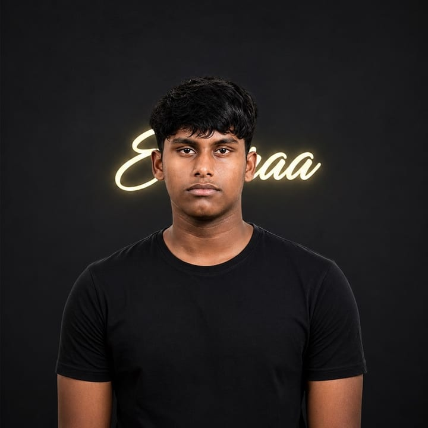

Right now
Building Navora: the customer, store and rider apps, the backend and the admin panel. Solo, for now.
hi, i'm

Building Navora. Sharing the journey.
I'm Muhammed Ajlan, a founder from Kerala. I'm building Navora, an app that connects people with the local shops around them. This site is where I share my work, my photos and what I learn along the way.


open the locker
A few things that say more about me than a bio does.
Right now
Building Navora: the customer, store and rider apps, the backend and the admin panel. Solo, for now.
The route
ManjeriMalabarKerala
Town by town, with shops people already trust.
Before Navora
Freelance graphic & web designer since 2024.
See my design workOn the desk
say hi
Shop owners, builders, or anyone curious about Navora. I read every message.
Get in touch